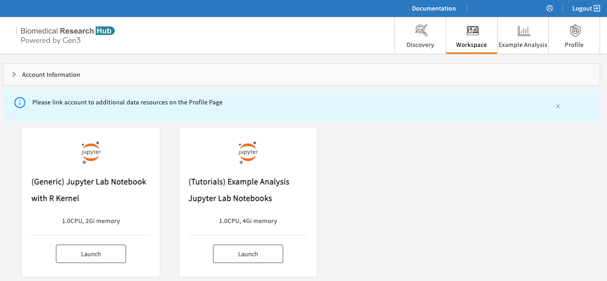
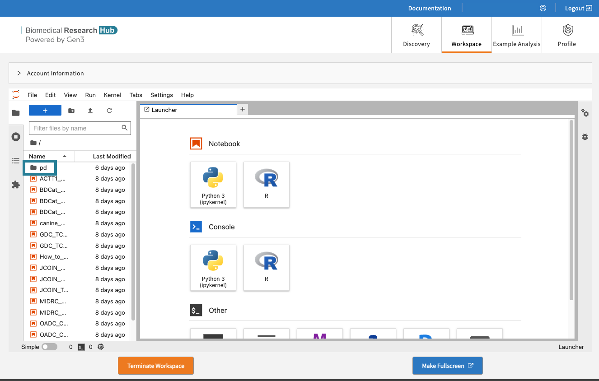
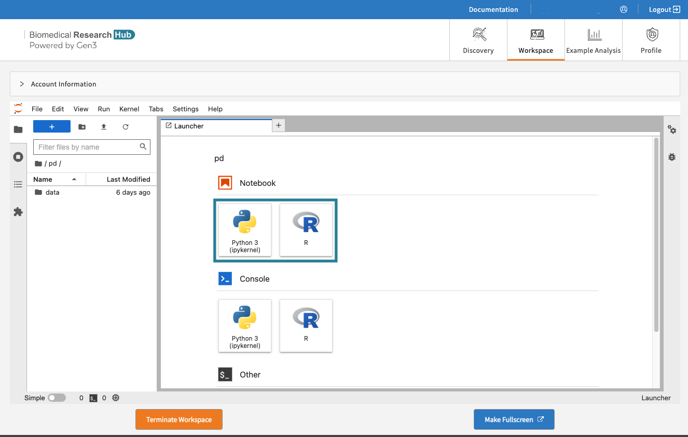
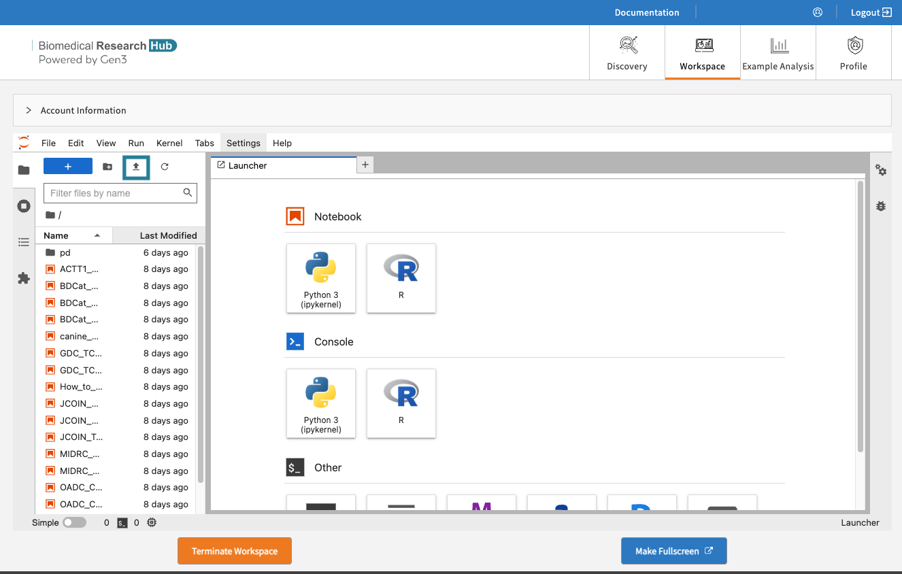
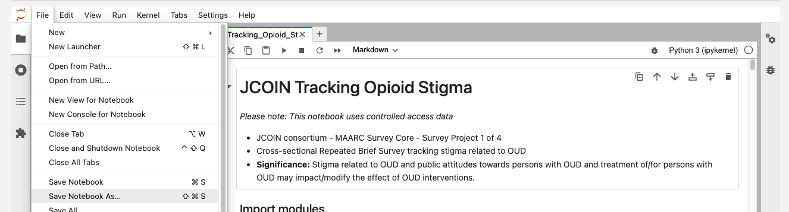
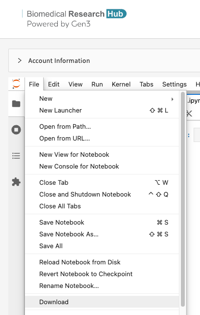

Workspaces¶
To use the workspace, users must register for workspace accounts to use the workspaces, as described on the Workspace Registration page.
BRH workspaces are secure data analysis environments in the cloud that can access data from one or more data resources. By default, Workspaces include Jupyter notebooks, Python and R, but can be configured to host virtually any application, including analysis workflows, data processing pipelines, or data visualization apps.
New to Jupyter? Learn more about the popular tool for data scientists on Jupyter.org (disclaimer: CTDS is not responsible for the content).
Guideline to get started in Workspaces¶
Once users have access to workspaces, use this guide below to get started with analysis work in workspaces.
-
Users need to log in via https://brh.data-commons.org/login to access workspaces.
-
After navigating to https://brh.data-commons.org/workspace, users will discover a list of pre-configured virtual machine (VM) images, as shown below.

- (Generic) Jupyter Notebook with R kernel: Choose this VM if you are familiar with setting up Python- or R-based Notebooks, or if you just exported one or multiple studies from the Discovery Page and want to start your custom analysis.
- Tutorial Notebooks: Explore our Jupyter Notebook tutorials written in Python or R, which pull data from various sources of the Biomedical Research Hub to leverage statistical programs and data analysis tools.
- JCOIN MOUD Accessibility Analysis
- Changes in Opiod Treatment Policy During COVID-19
- Gene Expression Analysis of Project TCGA-CHOL
- Proteome Data Commons (PDC) Clustergram
- MIDRC CT Scan
- Data Exploration using Python of Framingham Heart Study Teaching Dataset
- Data Exploration using R of Framingham Heart Study Teaching Dataset
- Data Exploration of CAMP Study Teaching Dataset
- Canine Data Commons FASTQ Reader
- MIDRC Open-R1 Clinical Data Analysis
- JCOIN Tracking Opioid Stigma
- Cox Model Implementation using ACTT Data from NIAID Clinical Trials Data Commons
- Identify Prostate Cancer Biomarker using Machine Learning
- Identification of Potential Drug Targets of Inflammatory Bowel Disease
-
Click “Launch” on any of the workspace options to spin up a copy of that VM. The status of launching the workspace is displayed after clicking on “Launch”. Note: Launching the VM may take several minutes.

-
After launching, the home folders are displayed. One of these folders is the user's persistent drive ("/pd").

-
Select the /pd folder. New files or licenses should be saved in the the /pd directory if users need to access them after restarting the workspaces. Only files saved in the /pd directory will remain available after termination of a workspace session.

- Attention: Any personal files in the folder “data” will be lost. Personal files in the directory /pd will persist.
- Do not save files in the "data" or “data/brh.data-commons.org” folders.
- The folder “brh.data-commons.org” in the “data” folder will host the data files you have exported from the Discovery Page.
-
Start a new notebook under “Notebook” in the Launcher tab. Click the tiles in the launcher and choose between Python 3 or R Studio as the base programmatic language.

-
Experiment away! Code blocks are entered in cells, which can be executed individually or all at once. Code documentation and comments can also be entered in cells, and the cell type can be set to support Markdown.
Results, including plots, tables, and graphics, can be generated in the workspace and downloaded as files.
-
Do not forget to terminate your workspace once your work is finished. Unterminated workspaces continue to accrue computational costs. Note, that Workspaces automatically shut down after 90 minutes of idle time.

Further reading: read more about how to download data files into the Workspaces here.
Upload, save, and download Files/Notebooks¶
Users can upload data files or Notebooks from the local machine to the home directory by clicking on “Upload” in the top left corner. Access the uploaded content in the Notebook (see below).

Then run in the cells, for example:
import os
import pandas as pd
os.chdir('/data')
demo_df = pd.read_csv('/this_is_a_demo.txt', sep='\t')
demo_df.head()
Users can save the notebook by clicking "File" - "Save as", as shown below.

Users can download notebooks by clicking "File" - "Download", as shown below. Download the notebook, for example, as ".ipynb".

Environments, Languages, and Tools¶
The following environments are available in the workspaces:
- Jupyter Lab

The following programmatic languages are available in Jupyter Notebooks:
- R
- Python 3
The following tools are available in Jupyter Notebooks:
- GitHub (read GitHub documentation)
Python 3 and R in Jupyter¶
Both Python 3 and R are available in Jupyter Notebooks.
Users can expect to be able to use typical Python or R packages, such as PyPI or CRAN. For Python and R, users can start a new notebook with a tile under "Notebook", as shown below.
Automatic Workspace Shutdown¶
Warning: When a BRH Workspace reaches the STRIDES Credits limit for STRIDES Credits Workspaces, or reaches the Hard Limit for STRIDES Grant Workspaces, the Workspace will be automatically terminated. Please be sure to save any work before reaching the STRIDES Credit or Hard Limit.
Warning: Workspaces will also automatically shut down after 90 minutes of idle time. A pop-up window will remind users to navigate back to the workspaces page in order to save the data.